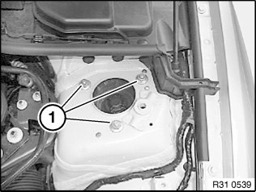
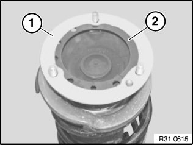

31 31 000 Removing and Installing Complete Left or Right Spring Strut Shock Absorber
31 31 000 Removing and installing complete left or right spring strut shock absorberImportant!
If the centering pin is missing from the support bearing, the position of the studs to the wheel arch must be marked so that the original camber is approximately maintained.
Only one nut may ever be released for marking.
Necessary preliminary tasks:
^ Remove front wheel
^ Remove front brake disc
^ Remove anti-roll bar link from spring strut
^ Detach plug connection for pulse generator and expose line up to holder on spring strut
^ Unplug connector for brake pad wear sensor and expose lead up to brake caliper.

If necessary, remove jointed rod of ride height sensor from control arm.
Slacken control arm bolt connection on front suspension subframe in order to prevent control arm rubber mount from being damaged.
Remove control arm from swivel bearing.
Remove tie rod end from swivel bearing.
Remove trailing link from swivel bearing
Warning!
Risk of injury!
Secure spring strut against falling out.

Centering pin missing: remove tension strut (on spring strut dome) and mark position of threaded pins to wheel arch.
Release nuts (1) and remove spring strut with swivel bearing towards bottom.
Installation:
Clean contact surface in spring strut dome.
Align spring strut using centering pin to bore in wheel arch or studs to wheel arch and push upwards.
Replace self-locking nuts.
Tightening torque 31 31 1AZ.

Important!
Replace faulty sealing washer (1).
Reinstall sealing washer (1) and plate insert (2).
After installation:
^ Perform chassis alignment check
^ Carry out steering angle sensor adjustment/adjustment for active front steering